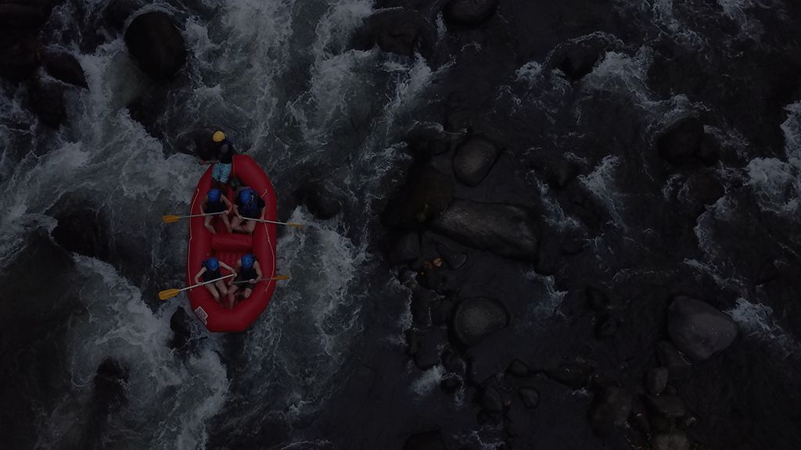

About Us
We at Dry Oar Rafting Company would like to thank you for visiting our site. We started out as a small company selling smaller aquatic gear, and have since grown into selling full rafts and sets of gear to go with them. We are committed to making high quality products that are built to last, no matter what nature may throw at it. We hope you find a product that suits your needs!

Our Mission
- To help rafting enthusiasts get the gear they need
- Promoting water-based hobbies with different non-rafting related gear
- Promoting healthy lifestyles with our products
- Each product should be made with quality in mind